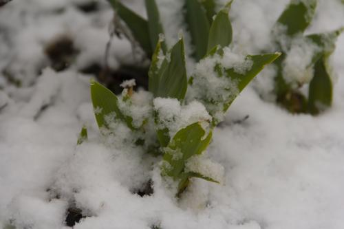
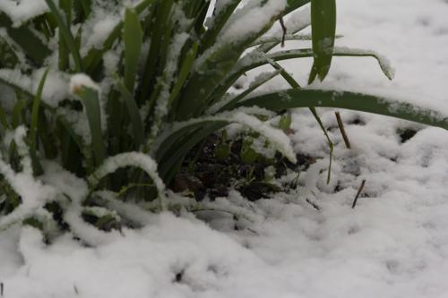

ХАРУЮКИ (Весенний Снег)
 Фото №1" title="ХАРУЮКИ (Весенний Снег) -> Фото №1 (Кликни, чтобы глянуть фулл)">
 Фото №4" title="ХАРУЮКИ (Весенний Снег) -> Фото №4 (Кликни, чтобы глянуть фулл)">
 -> Фото №2 (Кликни, чтобы глянуть фулл)")
 -> Фото №3 (Кликни, чтобы глянуть фулл)")
 -> Фото №5 (Кликни, чтобы глянуть фулл)")
 -> Фото №6 (Кликни, чтобы глянуть фулл)")
 -> Фото №7 (Кликни, чтобы глянуть фулл)")